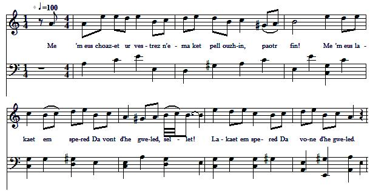
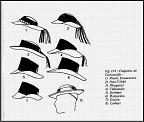
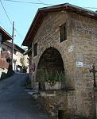
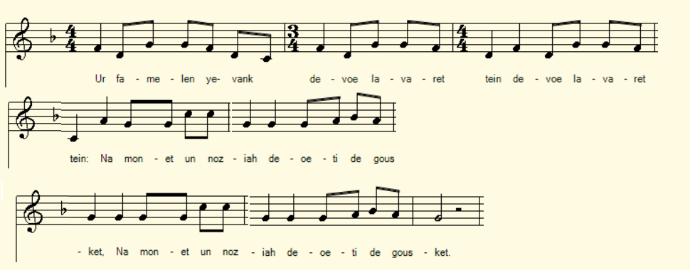
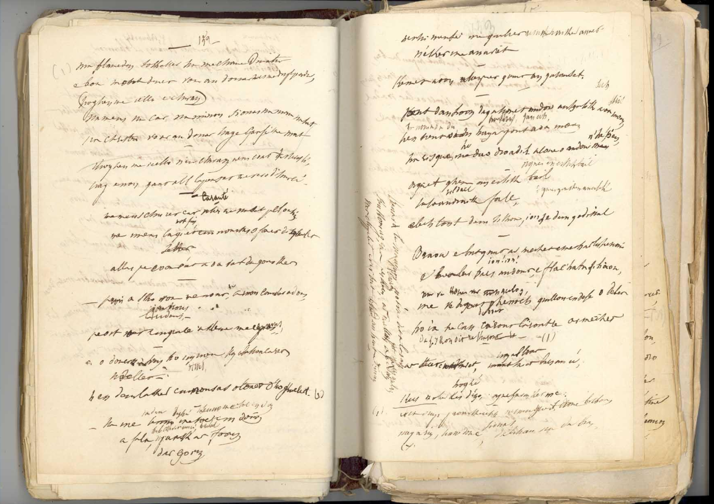

1° CARANTE - KARANTEZ
Amour
Love
Chant collecté par Théodore Hersart de La Villemarqué
dans le 1er Carnet de Keransquer (pp. 152-153).
MélodieArrangt Christian Souchon (c) 2015

|
Pas de mélodie connue. Remplacée par une mélodie bretonne que Maurice Duhamel donne comme exemple-type du mode mineur-dominante. |
No tune known. Replaced here with a tune which Maurice Duhamel presents as a typical minor-dominant scale melody. |
|
BREZHONEK p. 152 An den yaouank 1. - Me 'm eus choazet ur vestrez, N'ema ket pell ouzhin, paotr fin! M'em-eus lakaet em soñj monet d'he gwelet, sellet! Alas, pa oan deut, e oa aet da gousket! - Ar plac'h 2. - O, piv a sko war ma dor Emaon kousket dous, piv ra trouz? Pa'z on aet d'am gwele da gemer va repoz. - An den yaouank 3. - "Ho tousik hag ho mignon Hag ho prasañ-karet, sellet! En-deus lakaet n'e soñj donet d'ho kwelet." (Neuze, gant ar vezh o vezañ lavaret kement-se:) 4. Ha me da dennañ va zog [1] Ha fallaat barzh ar forn [2] d'ar gorn Mar m'he-defe gwelet, me ne vefe ket anavet, Kement a oa gant ar plac'h-se galanted. p. 153 5. Me 'vont d'an traoñ da gaouet An dour, an hentig a oa ken moan, An hent a oa du, hag ar pond a oa moan, E riskle Va daoudroadig,' kouezhis en dour penn 'vit penn. 6. Degouet ganin un eostig, Ganin un eostig bailh, vildailh! Hag a oa un draig fall, hag a oa un draig fall, E-lech don't d'am sikour, deut d'am godisal! - An eostik 7. - Brav eo bout gant ar merc'hed E-mesk al liñserioù, you-you! Vil, barzh an dour, eo flac'hatañ silioù! 8. Ma ve degouet ganeoc'h Gwilh- -aoù en-defe ho tebret da boued! Da zeskiñ dit karout, karout re ar merched. - [3] An den yaouank 9. - Ar stered a vez kavet Vez kavet barzh an neñv, o ge! Kerzh d'ober lez dezhe ha na tregas me! - An eostik 10. - Evit paour-kaezhezig! N'em-eus graet droug biskoazh, siwazh! Nag a rin, añv Doue, da vihan na da vras! 11. Kenavo-ta, va mignon! Noz-vat dit a laran, 'r c'haerrañ! Rak kenkoulz hag ur peskerez ar gwellañ a bedan War 'r chapeled, 'vit bout war evezh bremañ. - [4] [5] KLT gand Christian Souchon. |
TRADUCTION FRANCAISE p. 152 Le garçon 1. - Celle que mon coeur aime, Habite la rue même, Fort bien! J'ai décidé ce soir d'aller la trouver, Vous voyez! Elle, hélas, quand je suis arrivé, dormait! - La jeune fille 2. - Oh, qui frappe à ma porte Et qui fait de la sorte Du bruit, Alors que je me repose dans mon lit? - Le garçon 3. - Le doux ami, ma chère, Que votre coeur préfère Entre tous, Qui voudrait bien ce soir être près de vous.- (Puis, honteux de ce qu'il vient de dire:) 4. Nu-tête, je m'immerge [1] Dans un four qui m'héberge [2] En un coin. M'a-t-elle vu? Oui, mais elle ne m'a pas Reconnu, Tant cette charmante enfant a de galants! p. 153 5. Je fuis vers la rivière Sur un chemin de pierres Etroit. La nuit était sombre et le parapet bas, Patatras! Je glisse et la tête dans l'eau me voilà! 6. Un rossignol poète Arborant sur la tête Un point blanc Accourt aussitôt, - mais c'est un fort méchant Garnement - Non point pour m'aider, mais pour mieux me railler! - Le rossignol 7. - C'est à tort qu'on s'étrille A poursuivre une fille En ses draps! Vois, les anguilles, c'est juste bon pour toi! 8. Si le loup se promène, Sûr qu'il saura sans peine Te manger! Courir les filles, ce n'est point sans danger! [3] Le garçon 9. - Retourne à tes étoiles! Vois, le ciel est sans voile. C'est ton tour! Fais-leur la cour, épargne-moi tes discours! - Le rossignol 10. - La pauvre créature Que je suis, si j'endure Ces propos! Innocente et qu'on charge de tous les maux! 11. Mon ami, je te quitte: La nuit passera vite. Bonne nuit! J'ai, solitaire pêcheuse, mon rosaire Pour prier Plus d'un poisson vient mordre à mon hameçon! - [4] [5] Traduction: Christian Souchon (c) 2015 |
ENGLISH TRANSLATION p. 152 The young man 1. I chose a charming lover, And she was my next neighbour, How fine! I have decided to go and visit her In the night! She was asleep, as I came: a dreadful plight! - The girl 2. - At my door who is knocking? There is no such awful thing As noise! Resting at night is a thing a girl enjoys! - The young man 3. - "Your wooer and your suitor, Your most passionate lover, Is here Who wants to be by your side tonight, my dear." (Then, ashamed of his own words:) 4. Quickly, off I have taken My cap. [1] Inside an oven I've hid. [2] Did she see me? I doubt that she could know me If she did: This her great amount of suitors should forbid! p. 153 5. Off I ran to the river The path was altogether Narrow, Further downward was a bridge that was awkward, And so low! Heels over head I fell! The place was shallow. 6. A nightingale that gazed At me, and had a blaze On its brow! Many a word it said, but the saucy bird On the bough, It did not help me, but it scoffed at me now! - The nightingale 7. - A girl under a bed sheet That you fondle is great treat, It's true! Flirting with eels in the brook is great fun too! 8. Should come round Willie the wolf, Whom would he care to engulf, But you? Not a rest cure to go wenching or to woo! - [3] The young man 9. - The stars that high up twinkle They wait for your chant, fickle Fellow! Pay court to them, leave me alone here below! - The nightingale 10. - Unfortunate bird, never Did I harm whomsoever , In life, Nor shall I do! Don't tell me your tale of woe! 11. You'll spend a good night, I'm sure! To meet you was a pleasure, For me! I am like a fisher woman who prays the Rosary When fishing, always on the alert to be. [4] [5]- Translation: Christian Souchon (c) 2015 |
NOTES:
|
Bibliographie: Encore un merveilleux chant que La Villemarqué a été longtemps le seul à avoir noté. Il était pourtant connu à l'époque des Chouans. Le chant Bonaventure et les gendarmes y fait allusion aux strophes 10 et 11. Remarques  [1] Les chapeaux des hommes étaient aussi divers que les coiffes des femmes (cf. ci-contre: chapeaux de Cornouaille). Peut-être celui du garçon était-il différent du chapeau local, et l'aurait fait reconnaître.[2] Il doit s'agir d'un four public, tel que celui représenté sur la photo ci-contre, prise, il est vrai, dans le Bugey. [3] Il y eut des loups en Bretagne jusqu'en 1898 (Cf. Une bonne leçon). [4] Cette dernière phrase, que M. Donatien Laurent n'a pas pu transcrire entièrement, tant elle était illisible signifie peut-être que le rossignol s'amuse aux dépens de ceux qui s'attardent à l'écouter. [5] Il est fait allusion à ce chant aux strophes 10 et 11 du chant de chouan Bonaventure et les gendarmes (k75). |
 |
Bibliography: Again a wonderful song which, for a long time, only La Villemarqué had recorded. And yet it was known to the Chouan fighters in 1799. The song Bonaventure and the gendarms alludes to it in stanzas 10 and 11. Remarks [1] There was the same variety of men's hats as of womens' headdresses (see opposite: men's hats of Cornouaille). Maybe the boy's hat was different from the local fashion hat and would have betrayed him.  [2] The oven should be a public oven, like the one on the opposite picture, even if it is no Breton oven.[3] There were wolves in Brittany until 1898 (Cf. A lesson to all of us). [4] The last sentence of the song is illegible and M. Donatien Laurent could not transcribe it completely. The meaning should be that the nightingale lures listeners with her song to her own amusement. [5] This "son" is alluded to in stanzas 10 and 11 of the Chouan song Bonaventure and the Gendarmes (k75).. |
2° UR FAMELEN YEVANK DEVOE LAVARET TEIN
Une jeune femme m'avait dit
A young woman had told me
Chant collecté par Le Diberder
publié par Gilliouard dans "Chansons populaires bretonnes
recueillies par Le Diberder, série Carnac".
MélodieAir emprunté par Gilliouard à un autre chant populaire
Arrangt Christian Souchon (c) 2024

|
BREZHONEK (GWENEDEK) 1. Ur famelen yevank devoe lavaret tein devoe lavaret tein [1] Na mouned un noziah deoeti de gousket Na mouned un noziah deoeti de gousket. 2. Na mounet un noziah deoeti de gousket Me oe denik yevank ha me n'em boe manket. [2] 3. Me oe denik yevank ha me n'em boe manket. Pe oen arriu ino e oe eit de gousket. 4. Pe oen arriu ino e oe eit de gousket. Ha tri zaol ar en our ha m'em-boe-me fouettet. 5. - Piu a fouet ar men dour d'er ours-men ag en nouz? - Hou guellan-caret men dous, mar caret hé degour... 6. - Men guellan-caret-me a zou un den a feson: D'ar hours-men ag en nouz ne vale meit laeron! 7. D'ar hours-men ag en nouz ne vale meit laeron! Hanued er Chuanned pe en dezerterion! [3] - 8. Ha me mounet t'er guer evel ur paotr fachet, Ha gement men guele é grede, oen follet. 9. Ur pond em-boe de bassein hag e oe moen ha hir. Me zreid en-doe risklet, oen kouihed er revir. 10. Me zreid en-doe risklet, 'r revir e oen kouihed, Ha me mounet t'er guer, ur paotrik straket nèt. 11. Ha me mounet t'er guer, ur paotrik straket nèt. Sellet petra m'em-boe bet a carein er mirhied! 12. Ur blay oe er harter e klah malheur d'ober P'en-deve me havet, geton a oen debret. 13. P'en-deve me havet, geton a oen debret. Sellet petre 'm-boe bet e karein er mirhied: Kannet get François RICHARD e Karnak 27.12.1911 [4] [5] |
TRADUCTION FRANCAISE 1. Une jeune donselle un beau jour m'avait dit un beau jour m'avait dit [1] De venir avec elle passer toute une nuit, De venir avec elle passer toute une nuit. 2. De venir avec elle passer toute la nuit. J'étais un tout jeune homme, je n'y ai point failli. [2] 3. J'étais un tout jeune homme, je n'y ai point failli. Et me voilà sans faute, prêt à grimper au lit. 4. Et me voilà sans faute, prêt à grimper au lit. Je frappais à la porte trois coups pour qu'on ouvrît. 5. - Mais qui donc ainsi frappe si tard, en pleine nuit? - Celui que ton coeur aime, par pitié, ouvre-lui!... 6. - Quiconque mon coeur aime, sait comment se conduire: La nuit ne se promênent que voleurs ou bien pire! 7. Oui, la nuit se promênent seulement les voleurs, Ceux que "les Chouans" on nomme, ou bien les déserteurs! - [3] 8. Regagnant mes pénates de fort mauvaise humeur, En proie, veuillez me croire, à la pire fureur, 9. Sur mon itinéraire un pont étroit et fort long. Voilà que mon pied glisse, que je bois le bouillon! 10. Voilà que mon pied glisse, que je bois le bouillon. Je me remets en route, hélas, pauvre garçon. 11. Je me remets en route, tout trempé, tout fourbu. Courir après les filles, on ne m'y prendra plus! 12. Un loup dans les parages en quête d'une proie, Me trouve et ne fait qu'une seule bouchée de moi. 13. Sitôt qu'il me repère, me dévore ce loup: Voilà ce que l'on gagne à courir le guilledou! Chanté par François RICHARD à Carnac, le 27.12.1911 [4] [5] |
ENGLISH TRANSLATION 1. A young female once told me, she told me that I might, she told me that I might [1] Come to her home one evening and spend with her the night. Come to her home one evening and spend with her the night. 2. Come to her house one evening and spend with her the night. I was but a young stripling and I found it all right. [2] 3. I was but a young stripling and I did as she said. Without fail I came, ready to climb into her bed. 4. I came without fail, ready into her bed to climb. Hoping her door would open on which I knocked three times. 5. - Who knocks at so untimely a moment on my door? - The one you loves so dearly, open to him therefore!... 6. - The ones my heart loves dearly know well how to behave: At night hang only burglars about the streets and knaves! 7. Yes, only thieves and burglars linger outside at night, Those that we call the Chouans, or those who shun the fight! -[3] 8. I went back then to my home in a bad mood, indeed, So shocked that of impending dangers I took no heed. 9. I had to cross on my way a narrow and long brig: Suddenly my foot slipped, I fell into the creek! 10. Suddenly my foot slipped, into the creek I fell! Onto my feet I got back and I ran home like hell. 11. I ran home like hell, poor lad, exhausted, aye, and soaked. Wenching again, I swear it, never shall I be caught! 12. A wolf in the neighbourhood was looking for a prey, He got on my scent, found me, devoured me right away. 13. Right away he devoured me when he got on my scent From going wenching may you my tale of woe prevent! From the singing of François RICHARD at Carnac, on 27.12.1911 [4] [5] |
NOTES:
|
[1] Ce chant en dialecte vannetais collecté par le grand folkloriste Yves, Alexandre Le DIBERDER (1887-1959) en 1911 à Carnac, reprend à l'évidence l'essentiel du précédent noté par La Villemarqué. Il manque cependant le rossignol et les anguilles et l'effet comique produit par les "échos" ("paotr fin", "sellet" etc.) [2] On peut penser que le texte noté par la Villemarqué a servi de modèle au second chant, même si ce denier ouvre le récit par l'invitation de la demoiselle au héros malheureux de l'histoire., invitation dont le chant cornouaillais ne parle pas. Dans "Aux sources du Barzaz Breiz" (1989), p.126, Donatien Laurent lit et traduit comme suit le 2ème vers: "Me meus laquet em noussas [?] o fonet dé guelet...", "J'ai décidé une nuit d'aller la voir". De même au vers 7: "Hen deus laket eun nousas [?] o tonet d'ho kwelet... ", "Qui a décidé une nuit d'aller vous voir". Notre lecture de ces deux vers est différentes, mais non le sens à leur donner. [3] L'époque de composition de cette version se déduit de la strophe 7 où il est question de Chouans et de déserteurs. Comme on l'a dit, un chant de Chouans recueilli par La Villemarqué en 1841 et qui a trait à des événements que l'on peut dater précisément d'octobre 1799, mentionne cet amusant poème. Il y est question non seulement de loup, mais aussi d'anguilles, ce qui donne à penser que l'auteur avait en tête la version La Villemarqué, plutôt que le chant vannetais. [4] Edouard GILLIOUARD (1894-1978) était un musicologue aux services duquel Le Diberder fit souvent appel pour noter les chants qu'il entendait. En l'occurrence la mélodie donnée a été empruntée par Gilliouard à un autre chant en vue de la publication des "Chansons populaires bretonnes recueillies par Le Diberder, série Carnac". [5] Le catalogue de Patrick MALRIEU (1945-2019) confirme qu'on ne connait que les 2 versions ci-dessus de ce joli chant. Il est repéré comme suit: Référence : M-00407 Titre critique breton : Ur vaouez yaouank he doa lavaret din Titre critique français : Une jeune femme mavait dit Titre critique anglais : A young woman told me Résumé : Une jeune femme mavait dit d'aller dormir avec elle. Arrivé à sa porte, elle dormait. - « Qui frappe si tard dans la nuit ? » - « Votre bien-aimé si vous voulez ouvrir. » - « À cette heure-ci ne se promènent que voleurs, Chouans et déserteurs. » Je m'en retournai fâché et passant un pont, glissai dans la rivière. Voyez ce qu'on récolte à aimer les filles. Un loup en quête de mauvais coup m'a mangé. Voyez ce qu'il en coûte d'aimer les filles. Thèmes : Conséquences drolatiques des aventures |
[1] This song in Vannes dialect collected by the great folklorist Yves, Alexandre Le DIBERDER (1887-1959) in 1911 in Carnac, obviously takes up the essentials of that noted by La Villemarqué. However, the nightingale and the eels and the comic effect produced by the "echoes" ("paotr fin", "sellet" etc.) are missing. [2] We can think that the text noted by Villemarqué served as a model for the second song, even if the latter opens the story with the invitation of the young lady to the unfortunate hero of the story, an invitation which is not clearly mentioned in the Cornouaille dialect song. In "Aux sources du Barzaz Breiz" (1989), p.126, Donatien Laurent reads and translates the 2nd verse as follows: "Me meus laquet em noussas [?] o fonet dé guelet...", "I decided one night to go and see her". Likewise in verse 7: "Hen deus laket eun nousas [?] o tonet d'ho kwelet...", "Who decided one night to go and see you". Our reading of these two verses is different, but not the meaning to be given to them. [3] The time of composition of this version can be deduced from stanza 7 where it is a question of Chouans and deserters. As already stated, a Chouans song collected by La Villemarqué in 1841, relating to events that can be dated precisely to October 1799, mentions this amusing poem. It mentions not only wolves, but also eels, which suggests that the author had the La Villemarqué version in mind, rather than the Vannes dialect song. [4] Edouard GILLIOUARD (1894-1978) was a musicologist whose services Le Diberder often called upon to note down the songs he heard. In this case the given melody was borrowed by Gilliouard from another song with a view to the publication of Chansons populaire bretonnes collected by Le Diberder, Carnac series". [5] The catalog of Patrick MALRIEU (1945-2019) confirms that we only know the two versions above of this pretty song. It is identified as follows: Reference: M-00407 Breton critical title: Ur vaouez yaouank he doa lavaret din French critical title: Une jeune femme m'avait dit English critical title: A young woman had told me Summary: A young woman told me I might come and sleep with her. Arriving at her door, she was asleep. Who knocks so late at night? » Your loved one if you want to open. » At this time only thieves, Chouans and deserters are walking around. » I went back angry and, crossing a bridge, slipped into the river. See what we get from loving girls. A wolf looking for mischief ate me. See what it costs to love girls! Themes: Funny consequences of love affairs |

Pages 152 et 153 du Carnet 1 de Keransquer